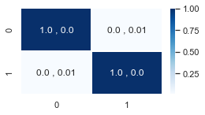
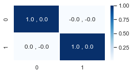
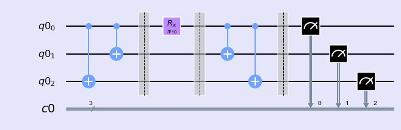
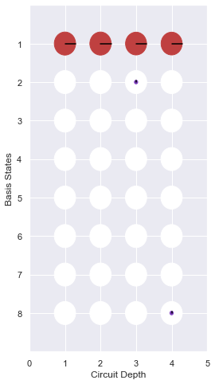
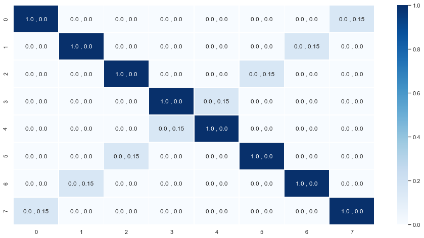
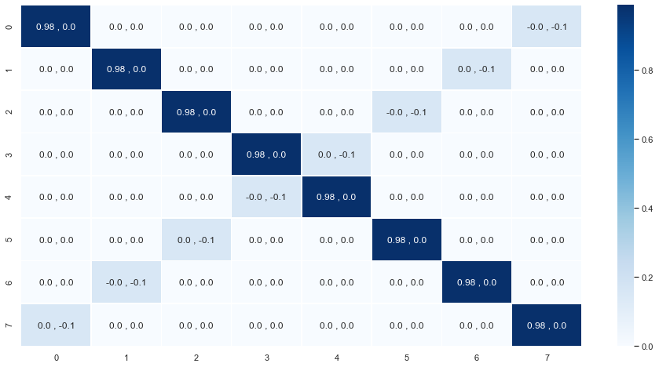
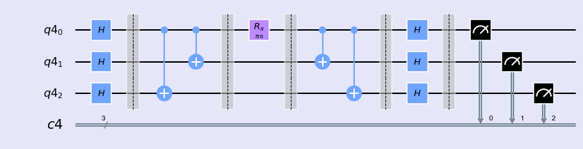
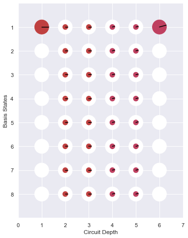
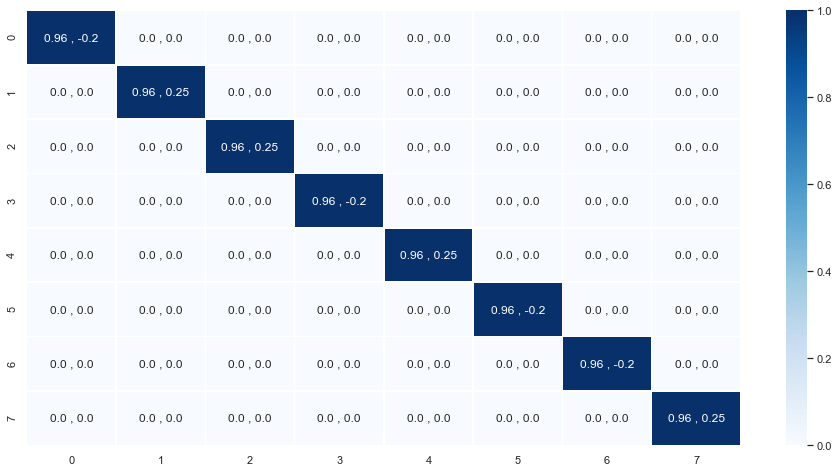

Universality
%matplotlib inline import numpy as np import IPython import matplotlib.pyplot as plt from qiskit import QuantumCircuit from qiskit import execute,BasicAer from qiskit import QuantumRegister,ClassicalRegister from qiskit.tools.jupyter import * from qiskit.visualization import * import seaborn as sns sns.set()
from helper import * import os import glob import moviepy.editor as mpy
$$ R_x(\theta) = e^{i \frac{\theta}{2} X} $$
$$R_x(\theta) = e^{i \frac{\theta}{2} X} = I + i \frac{\theta}{2} X + \frac{(i \frac{\theta}{2} X)^{2}}{2!} + ...$$
qc = QuantumCircuit(1,1) qc.rx(np.pi/100,0) qcm1 = qc.copy()
I = np.eye(2,2) X = np.array([[0,1],[1,0]]) U = I + (0+1j)*(np.pi/(2*100))*X plotMatrix(U)

backend = BasicAer.get_backend('unitary_simulator') job = execute(qcm1, backend) ndArray = job.result().get_unitary(qcm1, decimals=3) Matrix = np.matrix(ndArray) plotMatrix(Matrix)

Example 1
$$U = e^{i\frac{\theta}{2} X \otimes X \otimes X}$$
QCs =[] n =3 q = QuantumRegister(n) c = ClassicalRegister(n) qc = QuantumCircuit(q,c) QCs.append(qc.copy()) qc.cx(q[0],q[2]) qc.cx(q[0],q[1]) qc.barrier() QCs.append(qc.copy()) qc.rx(np.pi/10,q[0]) qc.barrier() QCs.append(qc.copy()) qc.cx(q[0],q[1]) qc.cx(q[0],q[2]) qcm2 = qc.copy() qc.barrier() QCs.append(qc.copy()) qc.measure(q,c) style = {'backgroundcolor': 'lavender'} qc.draw(output='mpl', style = style)

- Phase
phaseDict = getPhaseDict(QCs) plotiPhaseCircle(phaseDict,depth =len(phaseDict),path = "uplot",show=True,save=False)

<Figure size 432x288 with 0 Axes>
- Matrix
I3 = np.eye(8,8) X = np.array([[0,1],[1,0]]) XXX = np.kron(np.kron(X,X),X) U = I3 + (0+1j)*(np.pi/(2*10))*XXX plotMatrix(U)

backend = BasicAer.get_backend('unitary_simulator') job = execute(qcm2, backend) ndArray = job.result().get_unitary(qcm2, decimals=3) Matrix = np.matrix(ndArray) plotMatrix(Matrix)

Example 2
$$U = e^{i\frac{\theta}{2} Z \otimes Z \otimes Z}$$
QCs=[] n =3 q = QuantumRegister(n) c = ClassicalRegister(n) qc = QuantumCircuit(q,c) QCs.append(qc.copy()) qc.h(q[0]) qc.h(q[1]) qc.h(q[2]) qc.barrier() QCs.append(qc.copy()) qc.cx(q[0],q[2]) qc.cx(q[0],q[1]) qc.barrier() QCs.append(qc.copy()) qc.rx(np.pi/6,q[0]) qc.barrier() QCs.append(qc.copy()) qc.cx(q[0],q[1]) qc.cx(q[0],q[2]) qc.barrier() QCs.append(qc.copy()) qc.h(q[2]) qc.h(q[1]) qc.h(q[0]) qcm3 = qc.copy() qc.barrier() QCs.append(qc.copy()) qc.measure(q,c) style = {'backgroundcolor': 'lavender'} qc.draw(output='mpl', style = style)

- Phase
phaseDict = getPhaseDict(QCs) plotiPhaseCircle(phaseDict,depth =len(phaseDict),path = "uplot",show=True,save=False)

<Figure size 432x288 with 0 Axes>
- Matrix
I3 = np.eye(8,8) Z = np.array([[0,1],[0,-1]]) ZZZ = np.kron(np.kron(Z,Z),Z) U = I3 + (0+1j)*(np.pi/(2*10))*ZZZ plotMatrix(U)

backend = BasicAer.get_backend('unitary_simulator') job = execute(qcm3, backend) ndArray = job.result().get_unitary(qcm3, decimals=3) Matrix = np.matrix(ndArray) plotMatrix(Matrix)
